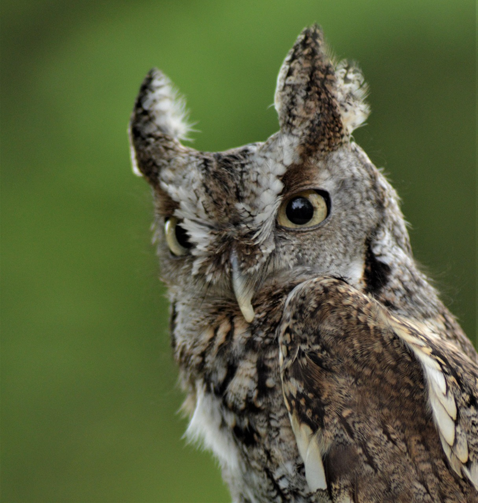
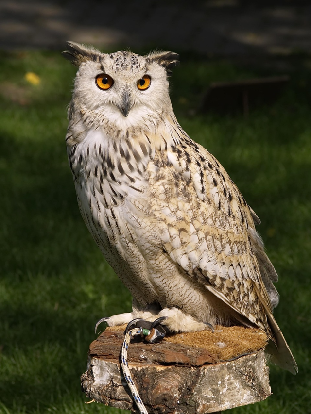

Estas aves poseen un esqueleto óseo compuesto por huesos huecos y ligeros, lo que les permite remontar el vuelo sin ningún problema y sus extensas alas le permiten volar a gran velocidad. Con sus alas desplegadas puede llegar a medir un metro y medio. El cráneo es ligero y está fusionado con los huesos de las alas para hacer estos más livianos. Tienen el cuello articulado y poseen 14 vértebras cervicales en él; gracias a esto, es tan flexible que son capaces de girarlo hasta unos 270º. El esternón es amplio, hiperdesarrollado y funciona como un ancla para los músculos de vuelo.
También carecen de orejas, pero poseen oídos muy bien desarrollados. Estos oídos son asimétricos, es decir, están ubicados a diferente altura: el derecho está unos milímetros más abajo que el derecho. Esto ocasiona que el sonido llegue con desfase temporal ligero, lo que permite a los estrigiformes triangular los sonidos y ubicar mejor a la presa.

Por otra parte, sus ojos están situados en el frente de la cabeza y no a los lados, lo que les confiere un amplio rango de visión binocular. Este tipo de visión es muy útil para calcular distancias. Los búhos son las aves con mayor visión binocular: hasta unos 70º. Los ojos tienen una forma casi tubular y poseen una fina capa de tejido llamada membrana nictitante que los protege. La capacidad de movimiento es casi nula, es por eso que tienen que girar tanto la cabeza.

Su plumaje muestra tonos marrones y blanquecinos; únicamente el macho del búho nival (Bubo scandiacus) exhibe un blanco casi impoluto. El disco facial suele ser más claro, y alrededor de los ojos puede haber franjas más claras u oscuras. Algunas especies tienen dos mechones de plumas en lo alto de la cabeza, que semejan orejas largas. Por lo regular, las plumas cubren parte de las patas. Las plumas que son renovadas cada año. El proceso de recambio es gradual y por sectores, y puede durar hasta 3 meses.
Las garras filosas y largas que le permiten sujetar a sus presas mientras mantiene su vuelo.Si bien volar es su medio de transporte más conocido, los búhos también son capaces de caminar e incluso saltar cuando es necesario. Aunque sus piernas son relativamente cortas en comparación con el tamaño de su cuerpo, son notablemente fuertes y musculosos.
Los búhos usan sus patas principalmente para posarse y agarrar presas, pero también pueden caminar y saltar en el suelo. Sus pies están equipados con garras curvas y afiladas que les proporcionan un agarre seguro a ramas y otras superficies. Estas garras son increíblemente poderosas, capaces de ejercer una fuerza de agarre de hasta 500 libras por pulgada cuadrada. Esta impresionante fuerza permite a los búhos capturar y transportar presas que pueden ser más grandes que su propio tamaño corporal.
El ulular es quizás el sonido más reconocible asociado con los búhos. Comúnmente se representa como el clásico sonido «hoo-hoo», pero en realidad, el ulular puede variar mucho entre las diferentes especies de búhos. Cada especie de búho tiene su propio ulular distintivo, lo que permite a los individuos identificar a los de su propia especie en la oscuridad de la noche.
El ulular lo utilizan principalmente los búhos para comunicarse entre sí. Sirve como una forma de establecer límites territoriales, atraer parejas potenciales y transmitir advertencias a otros búhos. Algunas especies de búhos tienen un ulular profundo y resonante, mientras que otras tienen un ulular melódico más agudo. El búho cornudo, por ejemplo, tiene un ulular profundo y retumbante que puede resonar durante toda la noche.
Referencias
Anatomía del Búho y LechuzaElaborado por: Armando Abel Figueroa Prado